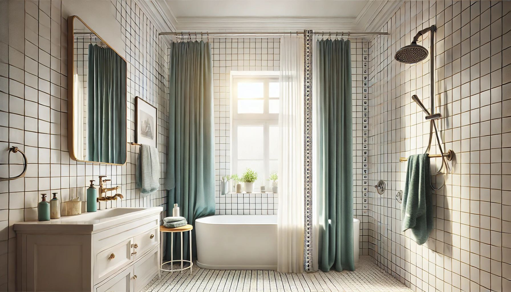

Ilane Tall
Product Researcher | Specializing in bathroom products and home textiles
All recommendations based on rigorous product research and customer review analysis.

Amazon Basics Bathroom Shower Curtain — Standard 72x72
The best-selling standard size. Fits most bathtub-shower combos. Wrinkle-resistant fabric, 45,000+ reviews.
Buying the wrong size shower curtain is one of the most common bathroom mistakes, and one of the most frustrating. A curtain that is too short splashes water all over the floor. One that is too long pools at the bottom and breeds mold. Too narrow, and you get cold drafts and water escaping the sides. The sizing labels — standard, extra-long, stall — don't help much when you are staring at your specific bathroom wondering which one actually fits.
This guide eliminates the guesswork. We cover every shower curtain size category, explain exactly which bathrooms each size fits, and show you how to measure your own shower in under two minutes. Whether you have a standard tub combo, a narrow stall shower, a clawfoot tub, or a walk-in with a high ceiling, you will know the exact dimensions you need before adding anything to your cart.
If you are also wondering about which material to choose, we have a separate guide for that. This article is purely about getting the size right.
In This Guide
Quick Size Reference Chart
Use this table to find your size in seconds. Match your bathroom type on the left, then check the recommended curtain dimensions on the right.
| Bathroom Type | Curtain Size | When to Use | Our Pick |
|---|---|---|---|
| Standard tub/shower combo | 72 × 72" | Rod at 75-77" height, 60" tub | Amazon Basics — $7.74 |
| High ceiling / tall shower | 72 × 84" | Rod at 80"+ height or ceiling-mount | Mrs Awesome — $7.99 |
| Standard tub, extra coverage | 72 × 78" | Rod at 77-80", want less floor gap | EurCross — $13.99 |
| Stall shower (no tub) | 36 × 72" | Narrow standalone shower stall | Hookless Stall — $40.10 |
| Clawfoot tub | 180 × 70" | Freestanding tub with oval rod | Barossa Clawfoot — $45.99 |
Standard Size: 72 × 72 Inches
The 72x72" shower curtain is the industry standard because it fits the most common bathroom setup in North America: a 60-inch bathtub-shower combo with the curtain rod mounted at approximately 75 to 77 inches from the floor, dimensions that align with National Kitchen & Bath Association guidelines. At this height, a 72-inch curtain provides 1-2 inches of clearance above the floor, which is the ideal gap to prevent mold while keeping water contained.
If your tub is 60 inches wide and your rod is at standard height, this is your size. Don't overthink it. The 72-inch width provides 6 inches of overlap on each side, which is enough to prevent cold air infiltration and water splashes.
Our Pick: Amazon Basics Bathroom Shower Curtain
72×72" | Wrinkle-resistant fabric | 4.6 ⭐ (45,448 reviews)
$7.74
Check Price on Amazon


Extra-Long: 72 × 84 Inches
If your curtain rod is mounted higher than 77 inches — which happens with tall ceilings, ceiling-mounted rods, or renovated showers — a standard 72-inch curtain will leave an ugly gap at the bottom. Water escapes underneath, the visual proportions look wrong, and you feel exposed. This is where the 72x84 size comes in.
Extra-long curtains add 12 inches of length, bridging the gap for rod heights up to approximately 86 inches from the floor. They are essential for bathrooms with 9-foot or 10-foot ceilings where the rod was mounted higher for an elevated, luxurious look.
This size is also the right choice if you have a standard tub but prefer the curtain to hang inside the tub rather than outside. The extra length lets the curtain drape properly with the bottom tucked inside the tub lip.

Our Pick: Mrs Awesome Extra Long Shower Curtain Liner
72×84" | Clear PEVA | 4.5 ⭐ (29,377 reviews)
$7.99
Check Price on Amazon


Slightly Longer: 72 × 78 Inches
The 72x78 is the size nobody talks about, but it solves a specific problem. If your curtain rod is mounted at 78 to 80 inches — slightly higher than standard but not high enough for an extra-long curtain — a standard 72-inch curtain hangs too high while an 84-inch curtain pools on the floor. The 78-inch length splits the difference perfectly.
This size is also ideal if you want a standard-height installation but prefer a smaller gap between the curtain hem and the floor for maximum water protection. It adds just enough length to close the gap without touching the floor.

Our Pick: EurCross 9G Clear Shower Curtain Liner
72×78" | Heavy-duty PEVA | 4.6 ⭐
$13.99
Check Price on Amazon


Stall Size: 36 × 72 Inches
Stall showers — standalone shower units without a bathtub — are narrower than tub combos. Using a standard 72-inch-wide curtain on a 36-inch stall opening means the excess fabric bunches up on the sides, looks messy, and creates folds where mildew loves to grow. A dedicated stall-size curtain eliminates this problem.
Stall curtains are typically 36 inches or 54 inches wide. The 36-inch width fits single-panel shower stalls with a standard opening. If your stall is wider, a 54-inch option is available. The length remains 72 inches, same as a standard curtain.
If you have a small bathroom with a stall shower, this size is essential. Do not try to force a standard curtain to fit — you will regret the bunching and mildew within weeks.

Our Pick: Hookless It's A Snap! Waffle (Stall Size)
36×72" | No hooks needed | Snap-in liner | 4.6 ⭐ (91,662 reviews)
$40.10
Check Price on Amazon


Clawfoot Tub: 180 × 70 Inches
Clawfoot tubs are beautiful, but they demand a completely different curtain approach. Because the tub is freestanding and exposed on all sides, you need a curtain that wraps entirely around it — not just across one end. This requires a curtain that is 180 inches wide (15 feet), which is more than double the standard width.
The curtain hangs from an oval or rectangular ceiling-mounted rod that follows the shape of the tub. At 180 inches wide and 70 inches long, it provides full coverage without pooling. The 70-inch length is slightly shorter than standard because clawfoot tub rods are typically lower than wall-mounted rods.
Do not attempt to rig multiple standard curtains around a clawfoot tub. The gaps between curtains let water through, and the overlapping panels look cluttered. A purpose-built clawfoot curtain is the only way to do this right.

Our Pick: Barossa Design Waffle Weave Clawfoot Tub Curtain
180×70" | Wraparound design | 4.6 ⭐ (31,025 reviews)
$45.99
Check Price on Amazon


How to Measure Your Shower for the Perfect Fit
Grab a tape measure. This takes less than two minutes and prevents a return trip to Amazon.
- Measure the width of your tub or shower opening. Measure from wall to wall at the point where the curtain rod sits. For most standard tubs, this is 60 inches. For stall showers, it is typically 32-36 inches.
- Measure the rod height. Measure from the floor to the bottom of your curtain rod (or where you plan to install it). If no rod exists yet, the standard mounting height is 75-77 inches from the floor.
- Calculate the curtain length you need. Subtract 2 inches from the rod-to-floor measurement. This gives you 1-2 inches of clearance above the floor. For example: rod at 76 inches means you need a 74-inch curtain. A standard 72-inch curtain will hang with about 4 inches of clearance — perfectly acceptable.
- Calculate the curtain width you need. Add 12 inches to the width of your tub or opening. This ensures 6 inches of overlap on each side. A 60-inch tub needs a 72-inch curtain (standard). A 36-inch stall needs a 48-inch curtain (a 54-inch stall curtain provides extra overlap).
- Account for rings. Curtain rings add about 1-2 inches to the total hanging length. If you are on the edge between two sizes, factor this in. If your rod is at exactly 77 inches and you are debating between 72 and 78, go with 72 — the rings will eat the extra inch.
Common Sizing Mistakes to Avoid
Mistake 1: Measuring from the top of the rod instead of the bottom
The curtain hangs from rings attached to the bottom of the rod, not the top. Measuring from the top of the rod adds 2-3 inches to your calculation, which means your curtain hangs lower than expected and may touch the floor.
Mistake 2: Assuming all "standard" curtains are the same length
While 72x72 is the industry standard, some brands sell 70x72 or 72x70 curtains and still call them "standard." Always check the exact dimensions in the product listing, not just the label.
Mistake 3: Buying the same size for curtain and liner
Your liner should hang inside the tub to catch water, while the decorative curtain hangs outside. If both are the same length, the liner's bottom edge may not reach inside the tub properly. Choose a liner that is the same width but 2 inches shorter than the curtain, or tuck the liner inside manually.
Mistake 4: Forgetting about shrinkage
Fabric shower curtains, especially cotton and cotton-blend, can shrink 2-5% after washing. If your measurements are borderline, size up. PEVA and polyester curtains do not shrink. Read our shower curtain cleaning guide for material-specific care instructions.
Mistake 5: Using a standard curtain on a clawfoot tub
A 72-inch curtain cannot cover a freestanding tub. You need a 180-inch wraparound curtain with a ceiling-mounted rod. There is no hack around this — standard curtains leave massive gaps that defeat the purpose entirely.
Frequently Asked Questions
What is the standard shower curtain size?
The standard shower curtain size is 72 inches wide by 72 inches long (183 x 183 cm). This fits most standard bathtub-shower combos, which are typically 60 inches wide with a curtain rod mounted at about 75-77 inches from the floor.
How long should a shower curtain be from rod to floor?
Your shower curtain should hang about 1 to 2 inches above the floor. It should not touch or pool on the floor, as this promotes mold and mildew growth. Measure from the bottom of your curtain rings to the floor and subtract 2 inches to find the ideal curtain length.
What size shower curtain do I need for a stall shower?
Stall showers (standalone units without a tub) typically need a 36x72 inch or 54x72 inch shower curtain. Measure the width of your stall opening and add 12 inches for overlap. Most stall curtains are 72 inches long, the same as standard curtains.
Do I need the same size curtain and liner?
Your liner should be the same width as your curtain, but it can be slightly shorter in length. The liner needs to hang inside the tub to catch water, while the decorative curtain hangs outside the tub. A liner that is 2 inches shorter than the curtain works well.
What size shower curtain fits a clawfoot tub?
Clawfoot tubs need a wraparound curtain, typically 180 inches wide by 70 inches long. This extra width lets the curtain completely encircle the tub when attached to a ceiling-mounted oval or rectangular curtain rod. Standard 72x72 curtains will not work.
How much overlap should a shower curtain have?
A shower curtain should overlap the tub or shower walls by at least 6 inches on each side. For a standard 60-inch tub, a 72-inch-wide curtain provides exactly this 6-inch overlap. If your tub is wider or your shower stall has an unusual width, measure and add 12 inches for proper coverage.
Find Your Perfect Size
Now that you know exactly what size you need, grab the right curtain and stop dealing with water on the floor.
Complete Your Bathroom Upgrade
Looking for the perfect bath rug to complement your shower curtain? Check out our sister site for expert picks.
→ Best Bath Rugs Guide